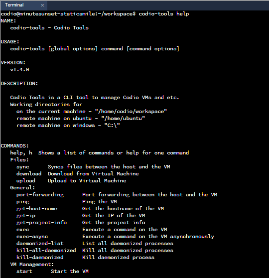

Virtual Machines¶
Codio supports Windows and Ubuntu OS in Virtual Machine boxes. To enable this for your organization, send an email to help@codio.com with approximate details of the number of students who will require access to computed VMs.
Note
Codio is not responsible for licensing issues in regard to any software you install to use.
The virtual machines can support 1, 4, 8 or 16Gb memory. VM’s are enabled for the organization and then set up at the Course level. All assignments in the course can utilize the virtual machines boxes, so we would recommend setting up a new course for those assignments that require them. All assignments in the course would use the same VM Stack.
Virtual machines are not available for individual projects (ie when created in My Projects area).
Please note: we have plans to develop this feature in the future but if you have ideas/suggestions please raise in our Feedback area
When virtual machines have been enabled for your organization, follow these steps:
Enabling VM for the Course¶
On the Courses page, select the course and then click the Course Details tab.
In the Virtual Machine section, toggle the Enable Virtual Machine button to On.
Select Operating System (currently supported: Windows & Ubuntu).
Select Memory to allocate the memory required.
Select Stack - select either Windows Codio Ami or Ubuntu Codio Ami depending on the OS type selected above but once you have published your own VM Stack (see below), you will be able to select those as required.
Save the changes.
Setting up the assignment(s)¶
Create an assignment and open the working copy in the usual manner.
Go to Tools>Virtual Machine to open the VM. If using Ubuntu OS you can use open ssh to open the same instance of the main ubuntu vm if you’d prefer to install/set up your VM that way. You can have both options active at the same time.
Note
It takes some time for the VM to activate and start.
Once the VM has started you can setup or install any items you need. If using Ubuntu OS you can also use Tools>Virtual Machine>open ssh to be able to open the same instance of the main ubuntu vm if you’d prefer to install/set up your VM that way. You can have both options active at the same time
Once you have completed setting up your environment and tested everything select Tools>Virtual Machine>Publish from the menu to publish the changes as an updated VM stack assignment providing your own name for the VM Stack.
Note
It can take around 10 minutes for the new stack to be created and available for use.
When the stack has been fully published go to Courses>Virtual Machine>Stack and select the newly published stack to make it available to students for their assignment(s).
Save the changes.
Return to the assignment in Edit Assignments and publish the assignment either from the publish button in the upper right corner or from Education>Publish Assignment to make the assignment accessible to your students.
Note
Publishing the assignment should be done as the last step to avoid students starting the assignments before the required VM Stack is saved to the course.
Updating the VM Stack after students have started the assignment(s)¶
Students that have already started working before a new/updated VM stack has been published will need to reset the Virtual Machine in their assignment(s) to use the updated VM stack, restart the VM if it does not restart itself. There are buttons available for this purpose in the VM tab.
Note
Reset and restart for students can take a substantial period of time (around 20mins on average) so we recommend that you fully test the VM stack you create before making it available to students.
Reset Virtual Machine for individual student¶
You can reset the Virtual Machine for individual student so the student will see the updates but any work they have done so far in the Virtual Machine, will be lost. Follow these steps to reset the VM for an individual student:
Open the course, go to the Overview tab and click the assignment.
Find the student and click the 3 blue dot button on the right.
Click the Reset VM button.
Click Yes to confirm the reset.
Updating the assignment content after initial publish¶
Any changes to the actual assignment (ie in Guides or the file structure) only require the assignment to be published in the usual manner either from the publish button in the upper right corner or from Education>Publish Assignment menu item..
Automatically starting/opening Virtual Machine¶
You can automatically start/open the Virtual Machine for students using Open tab setting for VM or direct them to Tools>Virtual Machine>Open to start themselves.
Pair Programming¶
Pair Programming is not supported for Virtual Machines.
Interacting with guides and Codio file system¶
You can interact with Virtual Machine using commands that can run from the Terminal

or from a Custom Guide Button
{Try it | terminal}(codio-tools help)
The working directories for:
Codio - “/home/codio/workspace”
Windows Virtual Machine - “C:\”
Ubuntu Virtual Machine - “/home/ubuntu”
Note
Instead of codio-tools you can also use codio-vm, both will work the same.
Following are some example of commands that can be used to interact with Virtual Machine:
codio-tools help - This command gives you a brief introduction about many commands that can be used to interact with Virtual Machine.
codio-tools upload - This command is used to upload a file from Codio filetree to Virtual Machine.
Windows example:
codio-tools upload "/home/codio/workspace/local_file.sh" "C:\remote_file.sh"Running above command will upload ‘local_file.sh’ file present in your Codio filetree into the Virtual Machine as ‘remote_file.sh’.
Same Command in Ubuntu would be:
codio-tools upload "/home/codio/workspace/local_file.sh" "/home/ubuntu/remote_file.sh"Similar to file, you can also upload the Folder
In Windows:
codio-tools upload "/home/codio/workspace/local_folder" "C:\remote_folder"In Ubuntu:
codio-tools upload "/home/codio/workspace/local_folder" "/home/ubuntu/remote_folder"codio-tools download - This command is used to download a file from Virtual Machine into your Codio filetree.
Windows example:
codio-tools download "C:\remote_file.sh" "/home/codio/workspace/local_file.sh"Running above command will download ‘remote_file.sh’ file from your Virtual Machine into your Codio filetree and saves it as ‘local_file.sh’.
Same Command in Ubuntu would be:
codio-tools download "/home/ubuntu/remote_file.sh" "/home/codio/workspace/local_file.sh"Similar to file, you can also download the Folder from your Virtual Machine
In Windows:
codio-tools download "C:\remote_folder" /home/codio/workspace/local_folder"In Ubuntu:
codio-tools download "/home/ubuntu/remote_folder" /home/codio/workspace/local_folder"codio-tools start - This command is used to start the Virtual Machine.
codio-tools restart - This command is used to restart the Virtual Machine.
codio-tools terminate - This command is used to reset the Virtual Machine.
codio-tools status - This command will return the current state of Virtual Machine. The returned value will be one of RUNNING, INACTIVE, STARTING, STOPPING.
codio-tools get-ip - This command will return the IP address of Virtual Machine.
codio-tools get-host-name - This command will return the Host Name of Virtual Machine.
codio-tools exec/codio-tools exec-async - This command is used to execute a command on Virtual Machine.
For example
codio-tools exec mkdir -p “my_folder”Running above command will create “my_folder” folder in the working directories of your Virtual Machine.
You can also open the Chrome browser using this command
codio-tools exec start chromeCan also open a particular URL in the Chrome browser
codio-tools exec start chrome /incognito https://codio.comcodio-tools sync - This command is used to sync folder/file between Codio box and Virtual Machine.
Windows example:
codio-tools sync "/home/codio/workspace/folder" "C:\Users\Administrator\Desktop\folder"Running above command will sync both, ‘folder’ in Codio box and ‘folder’ in Windows VM. The latest changes made to one of ‘folder’ will automatically synced to the other ‘folder’. If the mentioned file/folder does not exist in the Virtual Machine, it will be copied from Codio box to the Virtual Machine at the mentioned path.
Same Command in Ubuntu would be:
codio-tools sync "/home/codio/workspace/folder" "/home/ubuntu/folder"codio-tools port forwarding - This command is used to enable access to services running on the Virtual Machine from Codio box.
codio-tools port-forwarding 3355 3344Running above command will enable access to service running on port 3344 in Virtual Machine from port 3355 in Codio box. You can use either Box URL with port 3355 or call ‘curl localhost:3355’ from terminal in Codio box. The port values mentioned here are just an example, you can use different port values.
codio-tools daemonized-list - This command will list all the daemonized processes.
codio-tools kill-all-daemonized - This command will kill all the daemonized processes.
codio-tools kill-daemonized - This command will kill the specific daemonized process.
codio-tools kill-daemonized 353Running above command will kill the daemonized process whose PID is 353. You can see PID of all daemonized processes using codio-tools daemonized-list.
codio-tools get-project-info - This command will provide the below course/project/user information in Table or JSON format (Table is default).
codio-tools get-project-info
--format json:{ "user": { "id": "6446f386-8cf7-4e8f-ba68-450398e67f0a", "userName": "stud100", "fullName": "stud 100", "email": "yescodio+stud100@gmail.com" }, "course": { "id": "ba9c37a68782692435a47f8087e1b4d0", "name": "codio-tools get-project-info course", "lti": false, "assignment": { "id": "21fffe6e3932801221b7d5ef03fa646c", "name": "example assignment", "start": "2024-07-01T10:44:01Z", "end": "2024-07-31T10:44:01Z" }, "vm": { "enabled": false } }, "project": { "id": "c6cfed18-4164-4563-b912-e09d3b773ee1", "name": "example assignment", "slug": "example-assignment", "gigabox": "2gb" } }
codio-tools get-project-info
--format table:+-------------------------+--------------------------------------+ | project.id | c6cfed18-4164-4563-b912-e09d3b773ee1 | | project.name | example assignment | | project.slug | example-assignment | | project.gigabox | 2gb | | user.id | 6446f386-8cf7-4e8f-ba68-450398e67f0a | | user.username | stud100 | | user.fullName | stud 100 | | user.email | yescodio+stud100@gmail.com | | course.id | ba9c37a68782692435a47f8087e1b4d0 | | course.name | codio-tools get-project-info course | | course.lti | false | | course.assignment.id | 21fffe6e3932801221b7d5ef03fa646c | | course.assignment.name | example assignment | | course.assignment.start | 2024-07-01T10:44:01Z | | course.assignment.end | 2024-07-31T10:44:01Z | | course.vm.enabled | false | +-------------------------+--------------------------------------+